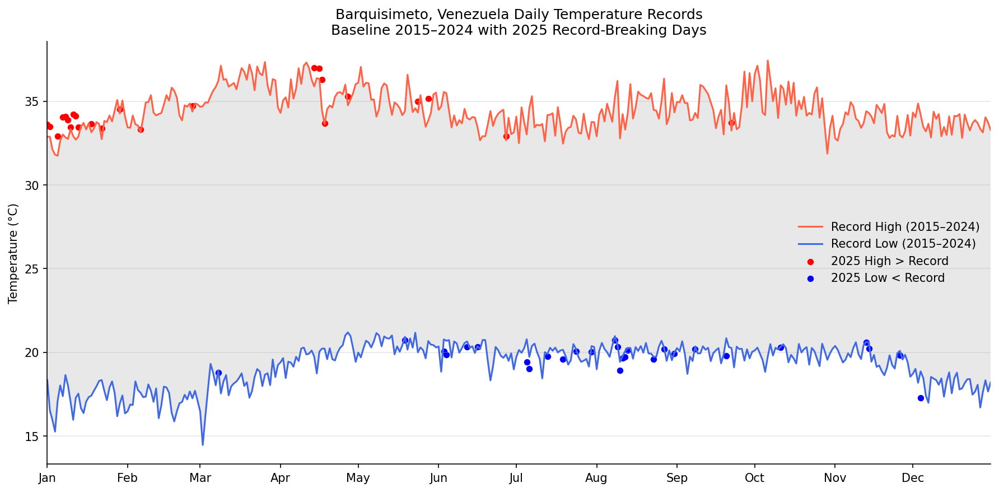

When Cold Broke More Records Than Heat
A Python-driven analysis of 10 years of NASA temperature data revealing unexpected climate volatility in Barquisimeto, Venezuela.
Executive Overview
Climate narratives often focus on rising heat. But when 2025 temperature data for Barquisimeto was compared against a 10-year baseline (2015–2024), a surprising pattern emerged: cold extremes outpaced heat extremes. Out of 52 record-breaking days identified, 28 broke cold records and only 24 broke heat records — suggesting that the real story is not a simple warming trend, but increased temperature volatility.
This project was built as part of an Advanced Data Science with Python course, using real NASA Power daily temperature data and a reproducible analytical pipeline.
Key Findings
- 52 record-breaking days in 2025 — out of 365 calendar days analyzed.
- 28 days broke cold records vs. 24 that broke heat records — more extreme cold events than extreme heat, a counterintuitive result for a semi-arid city.
- Increased volatility, not just warming: the data points to wider temperature swings rather than a single directional climate shift.
- Reproducible methodology: the full pipeline — from raw NASA data to published visualization — is available as an open Jupyter Notebook.
Temperature Record Visualization
The chart below shows the 10-year baseline temperature envelope (record highs and lows for each day of the year), with 2025 record-breaking days overlaid as scatter points. Red dots indicate days where 2025 exceeded the historical high; blue dots where it fell below the historical low.

Daily temperature envelope for Barquisimeto (2015–2024 baseline) with 2025 anomalies highlighted. Data source: NASA Power.
Analytical Approach
Data Source: NASA Power Project — daily surface temperature data (Tmax and Tmin) for Barquisimeto, Venezuela (2015–2025).
Methodology:
- Loaded and cleaned 10 years of daily temperature records, removing leap-day (Feb 29) for consistent 365-day comparison.
- Computed record highs and record lows for each calendar day across the 2015–2024 baseline period.
- Identified 2025 days where the daily high exceeded the historical record high, or the daily low fell below the historical record low.
- Visualized results as a temperature envelope chart with anomaly scatter points, exported as PNG for dashboard embedding.
Tools: Python (pandas, matplotlib, folium) · Jupyter Notebook · NASA Power API · GitHub Pages
View the full notebook and reproducible code on GitHub:
Barquisimeto Weather Analysis
Interested in similar data analysis for your projects?
Let's connect